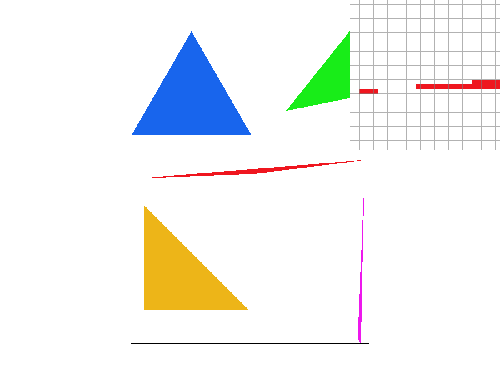
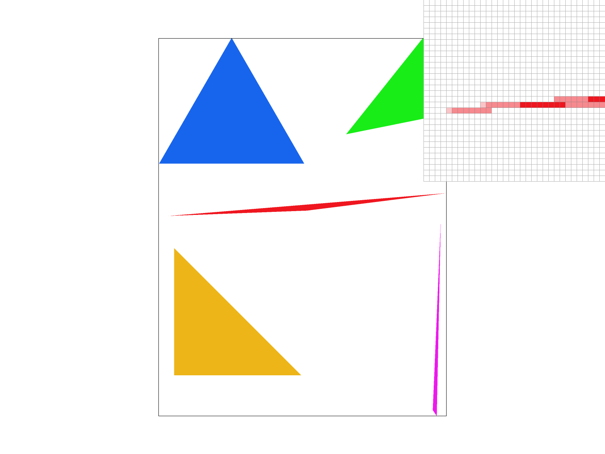
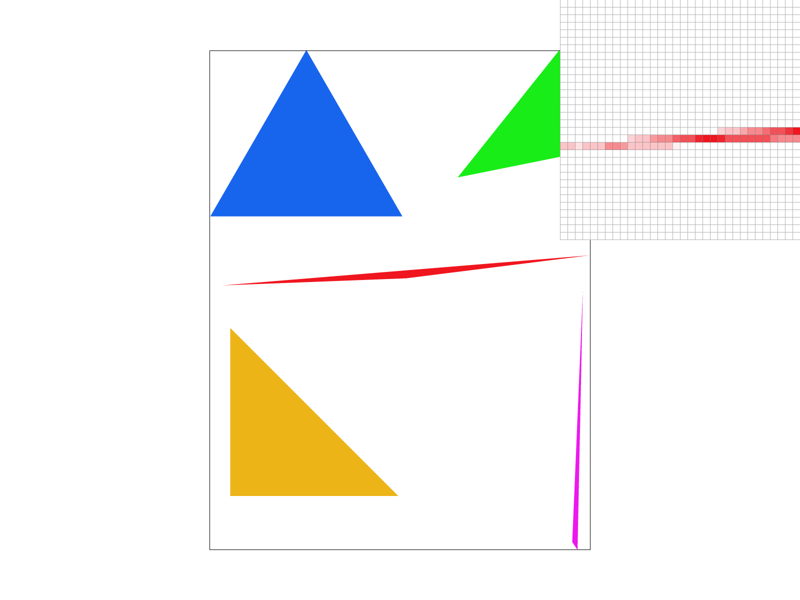
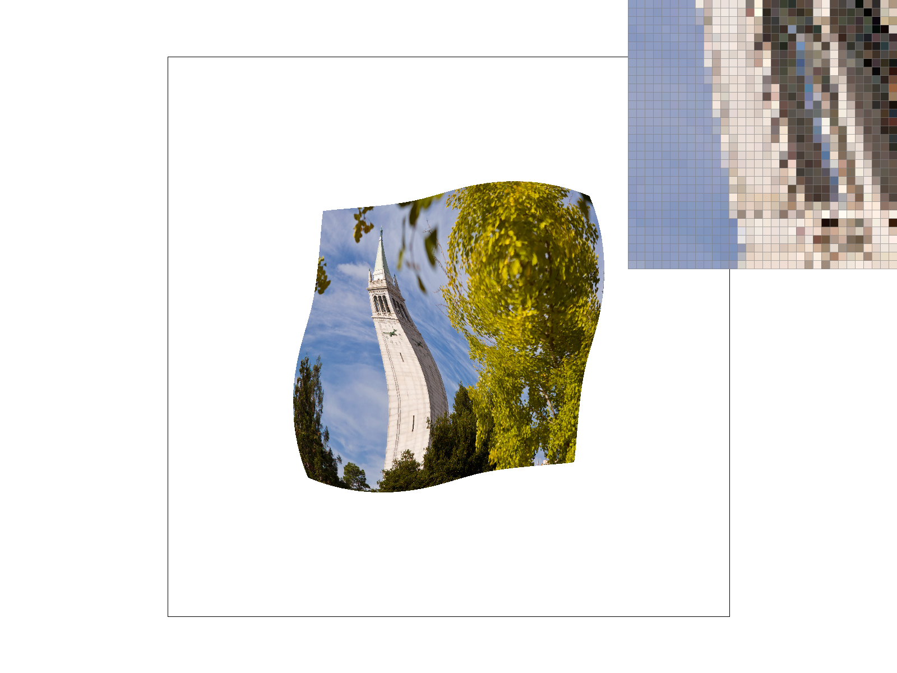
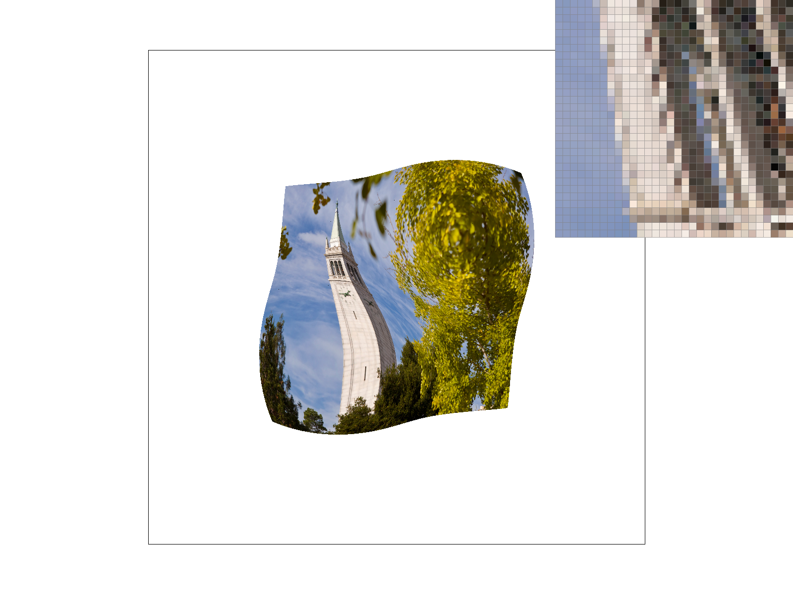
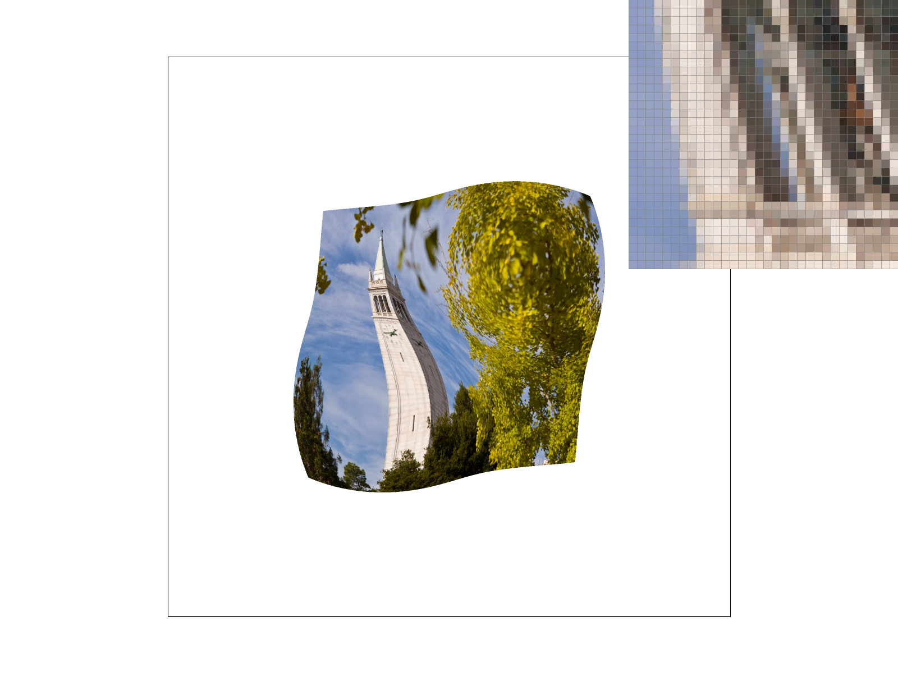
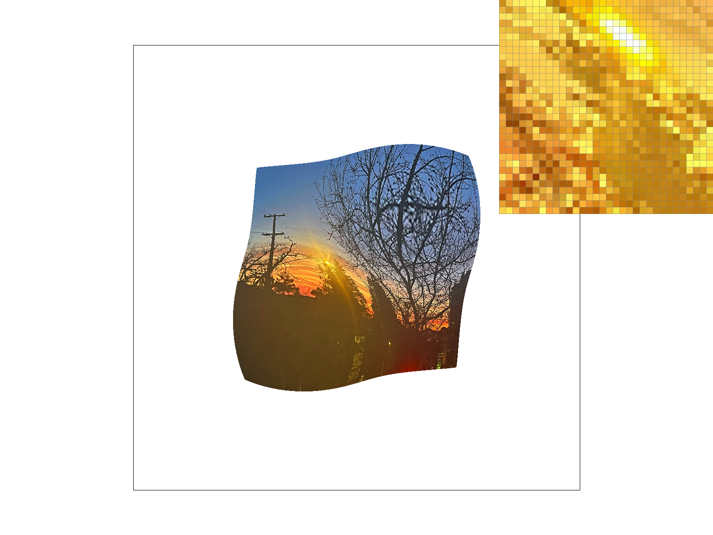
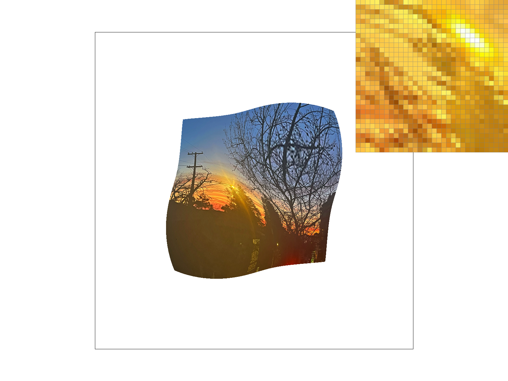
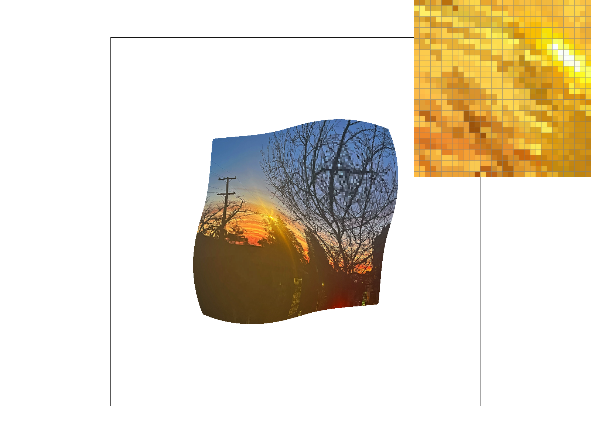

Overview
Give a high-level overview of what you implemented in this homework Think about what you've built as a whole. Share your thoughts on what interesting things you've learned from completing the homework.
I implemented various methods of rasterization as well as transforming. I started with rasterizing a triangle with pure color, and ended up with rasterizing a triangle using texture maps. They are all fundamental functions to implement rasterizations of all complex graphics. Now with proper svg files I can rasterize any 2D picture I want.
I've learned about an important part of the process that computer rasterizes a given graphic and displays it on the screen. I found it interesting to work out what a certain structure or function works for. Although I got an intuition about how to rasterize during the lecture, writing proper codes actually requires much deeper understanding. Considering the fact that the programme I implemented runs rather slow, I'm also amazed at the speed I am experiencing on computers.
Section I: Rasterization
Part 1: Rasterizing single-color triangles
Walk through how you rasterize triangles in your own words.
Decide the three borders according to the position of three vertices of the triangle. If the sample point is on the same direction(either clockwise or counter clockwise) to the three borders, then fill the corresponding sample buffer with the given color.
Explain how your algorithm is no worse than one that checks each sample within the bounding box of the triangle.
I actually checked each sample in my algorithm. I also wrote more pipelines to deal with the counter clockwise situation and border situation. But I used the continue command to reduce the times of checking.
Show a png screenshot of basic/test4.svg with the default viewing parameters and with the pixel inspector centered on an interesting part of the scene.
Part 2: Antialiasing triangles
Walk through your supersampling algorithm and data structures. Why is supersampling useful? What modifications did you make to the rasterization pipeline in the process? Explain how you used supersampling to antialias your triangles.
Supersampling is useful in reducing aliasing. While the number of pixels is limited, it helps soften the borders and make it better blend with the background, so that it looks less jaggy.
First, I added a parameter to store the value of square root of sample_rate,which helped to calculate the distance between sample points. Then, I added two more parameters to locate the supersampling points for each pixel. I also followed the hint to resize the sample_buffer by sample_rate.
Supersampling gets more information of the original pattern and makes sufficient use of them, so less aliasing occurs. By averaging colors of different sample points in a single pixel, the edges are blurred so they look smoother.
Show png screenshots of basic/test4.svg with the default viewing parameters and sample rates 1, 4, and 16 to compare them side-by-side. Position the pixel inspector over an area that showcases the effect dramatically; for example, a very skinny triangle corner. Explain why these results are observed.
|

|

|

|
Higher sample rate results in higher quality of picture. Basic sampling method performs badly at sharp corners, and supersampling can remarkably improve the performance.
Part 3: Transforms
Create an updated version of svg/transforms/robot.svg with cubeman doing something more interesting, like waving or running. Feel free to change his colors or proportions to suit your creativity. Save your svg file as my_robot.svg in your docs/ directory and show a png screenshot of your rendered drawing in your write-up. Explain what you were trying to do with cubeman in words.
Section II: Sampling
Part 4: Barycentric coordinates
Explain barycentric coordinates in your own words and use an image to aid you in your explanation. One idea is to use a svg file that plots a single triangle with one red, one green, and one blue vertex, which should produce a smoothly blended color triangle.
Barycentric coordinate is the center of mass. Barycentric coordinates uniformly distribute in a triangle and can well express a point's relative position to the borders.
Show a png screenshot of svg/basic/test7.svg with default viewing parameters and sample rate 1. If you make any additional images with color gradients, include them.
Part 5: "Pixel sampling" for texture mapping
Explain pixel sampling in your own words and describe how you implemented it to perform texture mapping. Briefly discuss the two different pixel sampling methods, nearest and bilinear.
Pixel sampling: Whether a pixel is colored is decided by coordinates of vertices in the frame, and what color is to be stored in the sample buffer is decided by the uv coordinate located in the texture map.
I implemented it by using the former codes of rasterizing triangle, and added some more parameters to calculate the barycentric coordinates to decide the sample points in the texture map. I also implemented two methods of sampling in texture map, nearest and bilinear.
The nearest sampling simply samples the nearest point to the coordinate in texture map, which is similar to the condition of sample rate 1. It works fast but is likely to cause aliasing. The bilinear sampling considers four sample points near the coordinate and average them, which is similar to supersampling. It works slower but gets higher quality of picture.
Check out the svg files in the svg/texmap/ directory. Use the pixel inspector to find a good example of where bilinear sampling clearly defeats nearest sampling. Show and compare four png screenshots using nearest sampling at 1 sample per pixel, nearest sampling at 16 samples per pixel, bilinear sampling at 1 sample per pixel, and bilinear sampling at 16 samples per pixel.
|

|

|

|

|
Sorry that my computer failed to generate the sample result of sample rate 16...Perhaps it's because I didn't optimize my algorithm. It took me 50 minutes to get this result and when I was trying to open the pixel inspector, it got stuck forever. So I could just use the screenshot tool on my computer to save it.:(

Comment on the relative differences. Discuss when there will be a large difference between the two methods and why.
There will be a large difference when texture mapping onto distorted patterns, when textures are displayed smaller than the original resolution, or when there is gradient effect.
The artifacts of nearest sampling increase when the texture needs to be stretched or compressed across a surface. Nearest sampling may result in moiré patterns and pixelation when reducing the size of high-resolution textures. Bilinear sampling performs better for smooth shading and transitions, such as gradients applied to surfaces.
Part 6: "Level sampling" with mipmaps for texture mapping
Explain level sampling in your own words and describe how you implemented it for texture mapping.
It decides the size of texture map to use according to the size of picture. Choosing the texture map in proper resolution can release redundant storage.
I followed the instruction to calculate and store sp.p_uv, sp.p_dx_uv and sp.p_dy_uv. I then used the formula in the discussion worksheet to calculate the level to choose, and output different values of level according to the chosen method.
You can now adjust your sampling technique by selecting pixel sampling, level sampling, or the number of samples per pixel. Describe the tradeoffs between speed, memory usage, and antialiasing power between the three various techniques.
Pixel sampling is the normal way(can be regarded as level zero). Its quality can be improved by bilinear sampling, but will run slower. Level sampling saves storage of the texture map, but might cause aliasing in the process of generating mipmaps. Supersampling can be applied while using the other two methods. It improves the quality of pictures but it requires much more judgement and storage and runs much more slowly.
Using a png file you find yourself, show us four versions of the image, using the combinations of L_ZERO and P_NEAREST, L_ZERO and P_LINEAR, L_NEAREST and P_NEAREST, as well as L_NEAREST and P_LINEAR.
|

|

|
|

|
|
Section III: Art Competition
If you are not participating in the optional art competition, don't worry about this section!